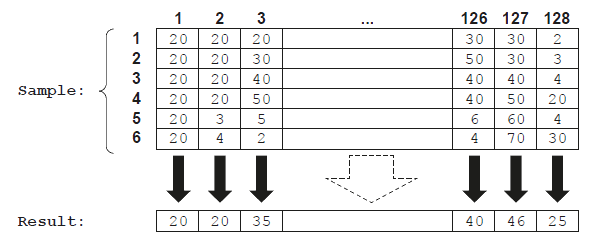

Pseudocode Basics
Variables & Constants
What is a variable?
- A variable is an identifier that can change in the lifetime of a program
- Identifiers should be:
- In mixed case (Pascal case)
- Only contain letters (A-Z, a-z)
- Only contain digits (0-9)
- Start with a capital letter and not a digit
- A variable can be associated a datatype when it is declared
- When a variable is declared, memory is allocated based on the data type indicated Pseudocode
DECLARE <identifier> : <datatype>
- To declare a variable, use the
DECLAREkeyword followed by the name and data type:
DECLARE Age : INTEGER
DECLARE Name : STRING
DECLARE IsLoggedIn : BOOLEAN
DECLARE Temperature : REAL
DECLARE DOB : DATE
- You can then assign a value using the assignment operator
←:
Age ← 18
Name ← "Alice"
IsLoggedIn ← TRUE
What is a constant?
- A constant is an identifier set once in the lifetime of a program
- Constants are generally named in all uppercase characters
- Constants aid the readability and maintainability Pseudocode
CONSTANT <identifier> ← <value>
- To declare a constant, use the
CONSTANTkeyword:
CONSTANT Pi ← 3.14159
CONSTANT MaxScore ← 100
CONSTANT SchoolName ← "Meridian Academy"
- Constants are not reassigned during execution – they are fixed values used throughout the algorithm
Example
-
You are writing a program to calculate the area of a circle using the formula:
Area ← π × radius² -
πis a constant (it never changes) radiusandareaare variables (they change depending on the input)
CONSTANT Pi ← 3.14159
DECLARE Radius : REAL
DECLARE Area : REAL
OUTPUT "Enter the radius of the circle:"
INPUT Radius
Area ← Pi * Radius * Radius
OUTPUT "The area of the circle is: ", Area
Variables and constants in different languages
| Feature | Python | VB.NET | Java |
|---|---|---|---|
| Declare variable | Just assign it (no keyword needed) | Dim radius As Double |
double radius; |
| Assign variable | radius = 5 |
radius = 5 |
radius = 5; |
| Declare constant | Convention: use UPPERCASE (PI = 3.14) (not enforced) |
Const Pi As Double = 3.14159 |
final double PI = 3.14159; |
| Reassign constant? | Yes (not truly constant unless enforced) | Cannot change once set | Cannot change once set |
| Use in calc. | area = PI * radius * radius |
area = Pi * radius * radius |
area = PI * radius * radius; |
Arithmetic & logical operators
Arithmetic operators
- Arithmetic operators are used to perform basic maths operations in a program
- These include adding, subtracting, multiplying and dividing values
Common arithmetic operators
| Operator | Purpose | Example | Result |
|---|---|---|---|
+ |
Addition | 5 + 3 |
8 |
+ |
Concatenation | "John" + " " + "Doe" |
"John Doe" |
- |
Subtraction | 10 - 4 |
6 |
* |
Multiplication | 3 * 5 |
15 |
/ |
Division | 10 / 2 |
5 |
^ |
Exponentiation (power of) | 3 ^ 3 |
27 |
MOD |
Modulus (remainder after division) | 10 MOD 3 |
1 |
Operator precedence (BODMAS / BIDMAS)
- Arithmetic operators follow operator precedence
- Multiplication and division happen before addition and subtraction unless brackets are used
result ← 2 + 3 * 4 // gives 14
result ← (2 + 3) * 4 // gives 20
Logical operators
- Logical operators are used to compare values
- They return either TRUE or FALSE and are commonly used in conditions and loops
Common logical operators
| Operator | Purpose | Example | Result |
|---|---|---|---|
= |
Equal to | 5 = 6 |
FALSE |
<> |
Not equal to | 5 != 7 |
TRUE |
> |
Greater than | 5 > 10 |
FALSE |
< |
Less than | 5 < 10 |
TRUE |
>= |
Greater than or equal to | 5 >= 10 |
FALSE |
<= |
Less than or equal to | 5 <= 10 |
TRUE |
Example code
x ← 5
y ← 10
OUTPUT x == y // FALSE
OUTPUT x <> y // TRUE
OUTPUT x < y // TRUE
OUTPUT x > y // FALSE
OUTPUT x <= y // TRUE
OUTPUT x >= y // FALSE
Selection
Selection
What is selection?
- Selection is when the flow of a program is changed, depending on a set of conditions
- The outcome of this condition will then determine which lines or block of code is run next
- Selection is used for validation, calculation and making sense of a user’s choices
- There are two ways to write selection statements:
- if… then… else…
- case…
If statements
What is an if statement?
- An If statements allow you to execute a set of instructions if a condition is true
- They have the following syntax: Pseudocode
// Without an ELSE clause
IF <condition> THEN
<statement(s)>
ENDIF
// With an ELSE clause
IF <condition> THEN
<statement(s)>
ELSE
<statement(s)>
ENDIF
Nested if statements
- Nested if statements are an if statement within an if statement
- Nested means to be ’ stored inside the other ‘
Example code
IF Player2Score > Player1Score THEN
IF Player2Score > HighScore THEN
OUTPUT Player2, " is champion and highest scorer"
ELSE
OUTPUT Player2, " is the new champion"
ENDIF
ELSE
OUTPUT Player1, " is still the champion"
IF Player1Score > HighScore THEN
OUTPUT Player1, " is also the highest scorer"
ENDIF
ENDIF
If statements in different languages
python
weather = input("What is the weather like today? (sunny, rainy, snowy): ")
if weather == "sunny":
print("Don't forget your sunglasses!")
elif weather == "rainy":
print("Take an umbrella with you.")
elif weather == "snowy":
print("Wear warm clothes!")
else:
print("Not sure what to suggest for that kind of weather.")
VB.net
Module WeatherCheck
Sub Main()
Dim weather As String
Console.Write("What is the weather like today? (sunny, rainy, snowy): ")
weather = Console.ReadLine()
If weather = "sunny" Then
Console.WriteLine("Don't forget your sunglasses!")
ElseIf weather = "rainy" Then
Console.WriteLine("Take an umbrella with you.")
ElseIf weather = "snowy" Then
Console.WriteLine("Wear warm clothes!")
Else
Console.WriteLine("Not sure what to suggest for that kind of weather.")
End If
Console.ReadLine() ' Keeps the console open
End Sub
End Module
java
import java.util.Scanner;
public class WeatherCheck {
public static void main(String[] args) {
Scanner scanner = new Scanner(System.in);
String weather;
System.out.print("What is the weather like today? (sunny, rainy, snowy): ");
weather = scanner.nextLine();
if (weather.equals("sunny")) {
System.out.println("Don't forget your sunglasses!");
} else if (weather.equals("rainy")) {
System.out.println("Take an umbrella with you.");
} else if (weather.equals("snowy")) {
System.out.println("Wear warm clothes!");
} else {
System.out.println("Not sure what to suggest for that kind of weather.");
}
scanner.close();
}
}
Case statements
What is a case statement?
- A case statement can mean less code but it only useful when comparing multiple values of the same variable
- If statements are more flexible and are generally used more in languages such as Python
- The format of a CASE statement is: Pseudocode
CASE of <identifier>
<value 1> : <statement1>
<statement2>
...
<value 2> : <statement1>
<statement2>
...
...
ENDCASE
An OTHERWISE clause can be the last clause
CASE of <identifier>
<value 1> : <statement1>
<statement2>
...
<value 2> : <statement1>
<statement2>
...
OTHERWISE : <statement1>
<statement2>
...
ENDCASE
Example code
DECLARE Direction : STRING
OUTPUT "Enter a direction (N, S, E, W):"
INPUT Direction
CASE OF Direction
"N" : OUTPUT "You are heading North"
"S" : OUTPUT "You are heading South"
"E" : OUTPUT "You are heading East"
"W" : OUTPUT "You are heading West"
OTHERWISE : OUTPUT "Invalid direction entered"
ENDCASE
Case statements in different languages
Python
weather = input("What is the weather like today? (sunny, rainy, snowy): ")
match weather:
case "sunny":
print("Don't forget your sunglasses!")
case "rainy":
print("Take an umbrella with you.")
case "snowy":
print("Wear warm clothes!")
case _:
print("Not sure what to suggest for that kind of weather.")
VB.NET
Module WeatherCheck
Sub Main()
Dim weather As String
Console.Write("What is the weather like today? (sunny, rainy, snowy): ")
weather = Console.ReadLine()
Select Case weather
Case "sunny"
Console.WriteLine("Don't forget your sunglasses!")
Case "rainy"
Console.WriteLine("Take an umbrella with you.")
Case "snowy"
Console.WriteLine("Wear warm clothes!")
Case Else
Console.WriteLine("Not sure what to suggest for that kind of weather.")
End Select
Console.ReadLine() ' Keeps the console open
End Sub
End Module
Java
import java.util.Scanner;
public class WeatherCheck {
public static void main(String[] args) {
Scanner scanner = new Scanner(System.in);
String weather;
System.out.print("What is the weather like today? (sunny, rainy, snowy): ");
weather = scanner.nextLine();
switch (weather) {
case "sunny":
System.out.println("Don't forget your sunglasses!");
break;
case "rainy":
System.out.println("Take an umbrella with you.");
break;
case "snowy":
System.out.println("Wear warm clothes!");
break;
default:
System.out.println("Not sure what to suggest for that kind of weather.");
break;
}
scanner.close();
}
}
Iteration
What is iteration?
- Iteration is repeating a line or a block of code using a loop
- Iteration can be:
- Count-controlled
- Condition-controlled
Count-controlled loops
What is a count-controlled loop?
- A count-controlled loop is when the code is repeated a fixed number of times (e.g. using a FOR loop)
- A count-controlled loop can be written as: Pseudocode
FOR <identifier> ← <value1> TO <value2>
<statements(s)>
NEXT
// with steps
FOR <identifier> ← <value1> TO <value2> STEP <increment>
<statements(s)>
NEXT
- In a FOR loop, the increment must be an expression that evaluates to an integer
- The loop starts at
value1 - The identifier is updated by the increment value on each iteration
- The loop continues until the identifier passes value2
- The loop starts at
- The increment can be positive or negative, depending on the direction you want the loop to count
Nested count-controlled loops
FOR i ← 1 TO 3
FOR j ← 1 TO 3
OUTPUT i, " x ", j, " = ", i * j
NEXT j
NEXT i
- The outer loop runs
ifrom 1 to 3 - For each value of
i, the inner loop runsjfrom 1 to 3 - It outputs all combinations of
i × j
1 x 1 = 1
1 x 2 = 2
1 x 3 = 3
2 x 1 = 2
...
3 x 3 = 9
Count-controlled loops in different languages
Print the numbers 1 to 5 in different languages Python
for i in range(1, 6):
print(i)
VB.net
For i As Integer = 1 To 5
Console.WriteLine(i)
Next
Java
for (int i = 1; i <= 5; i++) {
System.out.println(i);
}
Condition-controlled loops
What is a condition controlled loop?
- A condition controlled loop is when the code is repeated until a condition is met
- There are two types of condition controlled loops:
- Post-condition (REPEAT)
- Pre-condition (WHILE)
Post-condition loops (REPEAT)
- A post-condition loop is executed at least once
- The condition must be an expression that evaluates to a Boolean (True/False)
- The condition is tested after the statements are executed and only stops once the condition is evaluated to True
- It can be written as: Pseudocode
REPEAT
<statement(s)>
UNTIL
Pre-condition loops (WHILE)
- The condition must be an expression that evaluates to a Boolean (True/False)
- The condition is tested and statements are only executed if the condition evaluates to True
- After statements have been executed the condition is tested again
- The loop ends when the condition evaluates to False
- It can be written as: Pseudocode
WHILE <condition> DO
<statement(s)>
ENDWHILE
Nested condition-controlled loops
DECLARE Username : STRING
DECLARE Count : INTEGER
Count ← 0
WHILE Count < 3
Username ← ""
WHILE Username = ""
OUTPUT "Enter a username: "
INPUT Username
IF Username = "" THEN
OUTPUT "Username cannot be blank."
ENDIF
ENDWHILE
OUTPUT "Username accepted: ", Username
Count ← Count + 1
ENDWHILE
- Ask the user to enter up to 3 usernames
- For each one, keep asking until a non-empty name is entered
- Outer WHILE runs 3 times (for 3 usernames)
- Inner WHILE ensures that each username is not blank
Condition-controlled loops in different languages
task: Keep asking the user to enter a password until they type "admin"
Python
password = ""
while password != "admin":
password = input("Enter the password: ")
if password != "admin":
print("Incorrect, try again.")
print("Access granted!")
VB.net
Module PasswordCheck
Sub Main()
Dim password As String = ""
While password <> "admin"
Console.Write("Enter the password: ")
password = Console.ReadLine()
If password <> "admin" Then
Console.WriteLine("Incorrect, try again.")
End If
End While
Console.WriteLine("Access granted!")
Console.ReadLine() ' Keeps the console open
End Sub
End Module
Java
import java.util.Scanner;
public class PasswordCheck {
public static void main(String[] args) {
Scanner scanner = new Scanner(System.in);
String password = "";
while (!password.equals("admin")) {
System.out.print("Enter the password: ");
password = scanner.nextLine();
if (!password.equals("admin")) {
System.out.println("Incorrect, try again.");
}
}
System.out.println("Access granted!");
scanner.close();
}
}
When to use each type of loop
| Loop type | When to use | Example scenario |
|---|---|---|
Count-controlled loop (FOR) |
When you know in advance how many times you want the loop to run | Repeating an action 5 times, generating a multiplication table |
Pre-condition loop (WHILE) |
When you want to check a condition before running the loop. It may run 0 or more times | Keep asking for a valid password before granting access |
Post-condition loop (REPEAT ... UNTIL) |
When you want the loop to run at least once, and then stop when a condition becomes true | Ask the user for input and validate it after first run |
Procedures & Functions
What are functions and procedures?
- Functions and proceduresare a type of sub program, a sequence of instructions that perform a specific task or set of tasks
- Procedures and functions are defined at the start of the code
- Sub programs are often used to simplify a program by breaking it into smaller, more manageable parts
- Sub programs can be used to:
- Avoid duplicating code and can be reused throughout a program
- Improve the readability and maintainability of code
- Perform calculations, to retrieve data, or to make decisions based on input
- Parameters are values that are passed into a sub program
- Parameters can be variables or values and they are located in brackets after the name of the sub program
- Example:
FUNCTION TaxCalculator(pay,taxcode)ORPROCEDURE TaxCalculator(pay,taxcode)
- Sub programs can have multiple parameters
- To use a sub program you ’ call ’ it from the main program
What’s the difference between a function and procedure?
- A Function returns a value whereas a procedure does not
Procedures
- Procedures are defined using the PROCEDURE keyword in pseudocode
- A procedure can be written as: Pseudocode
PROCEDURE <identifier>()
<statement(s)>
ENDPROCEDURE
PROCEDURE <identifier>(<param1>:<data type>, <param2>:<data type>...)
<statement(s)>
ENDPROCEDURE
- The identifier is used to call the procedure
- To call a procedure, it can be written as:
CALL <identifier>()
CALL <identifier>(Value1,Value2,...)
- When parameters are used,
value1, value2...must be of the correct data type and in the same sequence
Example code
PROCEDURE GreetUser(Name : STRING)
OUTPUT "Hello, ", Name, "!"
ENDPROCEDURE
DECLARE UserName : STRING
OUTPUT "Enter your name: "
INPUT UserName
CALL GreetUser(UserName)
PROCEDURE GreetUserdefines the procedure, which takes one parameter:Name- The procedure prints a personalised greeting
- The main program asks for the user’s name and then calls the procedure using
CALL
Functions
- Functions are defined using the FUNCTION keyword in pseudocode or def keyword in Python
- Functions always return a value so they do not use the
CALLfunction, instead they are called within an expression - A function can be written as: **Pseudocode
FUNCTION <identifier> RETURNS <data type>
<statement(s)>
ENDFUNCTION
FUNCTION <identifier>(<param1>:<data type>, <param2>:<data type>...) RETURNS <data type>
<statement(s)>
ENDFUNCTION
Example code
FUNCTION calculate_area(length: INTEGER, width: INTEGER)
area ← length * width
RETURN area
ENDFUNCTION
# Output the value returned from the function
OUTPUT(calculate_area(5,3))
- Defines a function called
calculate_area - It takes two parameters:
lengthandwidth, both of typeINTEGER - A local variable
areais declared and assigned the result oflength × width - The function returns the result to wherever it was called from
Parameter passing
What is parameter passing?
- Parameter passing is the method by which values or references are given to procedures or functions so they can use or modify data during execution
- When writing procedures, you can control how parameters are passed using:
BYVAL– pass a copy of the value (default behaviour)BYREF– pass the actual variable, so changes inside the procedure affect the original
| Keyword | What it does |
|---|---|
BYVAL |
Passes a copy of the value (no change to original) |
BYREF |
Passes a reference to the variable (can be modified) |
- If no keyword is used, it is assumed to be
BYVAL - Functions should not use
BYREFparameters – only procedures should
Example – Swapping two values (Procedure with BYREF)
PROCEDURE Swap(BYREF X : INTEGER, Y : INTEGER)
DECLARE Temp : INTEGER
Temp ← X
X ← Y
Y ← Temp
ENDPROCEDURE
Xis passed by reference, so it can be changed-
Yis passed by value, so any change toYinside the procedure does not affect the original value A video-conferencing program supports up to six users. Speech from each user is sampled and digitised (converted from analogue to digital). Digitised values are stored in arraySample. The arraySampleconsists of 6 rows by 128 columns and is of type integer. Each row contains 128 digitised sound samples from one user. The digitised sound samples from each user are to be processed to produce a single value which will be stored in a 1D arrayResultof type integer. This process will be implemented by procedureMix(). A procedureMix()will: -
calculate the average of each of the 6 sound samples in a column
- ignore sound sample values of 10 or less
- store the average value in the corresponding position in
Result - repeat for each column in array
SampleThe diagram uses example values to illustrate the process:
Write pseudocode for procedureMix(). AssumeSampleandResultare global. [6] Answer
PROCEDURE Mix()
DECLARE Count, Total ThisNum : INTEGER
DECLARE ThisUser, ThisSample : INTEGER
FOR ThisSample ← 1 TO 128
Count ← 0
Total ← 0
FOR ThisUser ← 1 TO 6
IF Sample[ThisUser, ThisSample] > 10 THEN
Count ← Count + 1
Total ← Total + Sample[ThisUser, ThisSample]
ENDIF
NEXT ThisUser
Result[ThisSample] ← INT(Total / Count)
NEXT ThisSample
ENDPROCEDURE
- Declaration and initialisation before inner loop of
CountandTotal[1 mark] - Outer Loop for 128 iterations [1 mark]
- Inner loop for six iterations [1 mark]
- Test for sample > 10 in a loop [1 mark]
- and if true sum
Totaland incrementCount[1 mark] - Calculate average value and assign to
Resultarray after inner loop and within outer loop [1 mark] - Use of
INT()/ DIVto convert average to integer [1 mark]